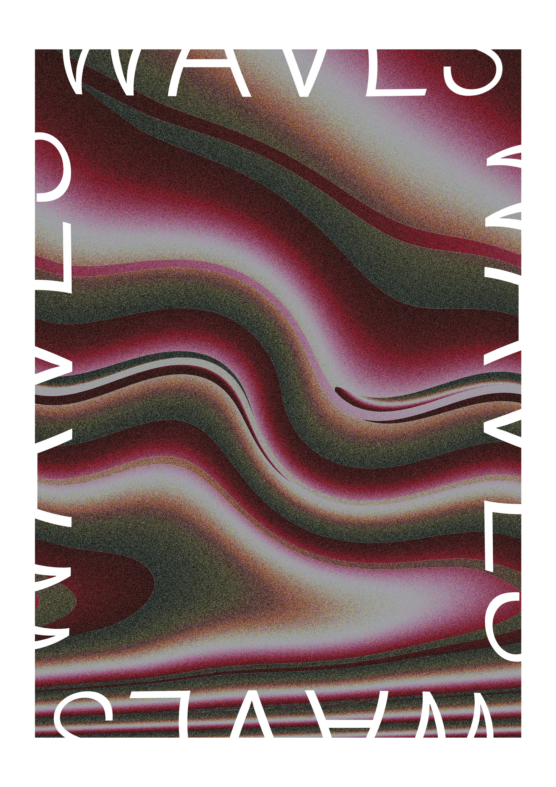
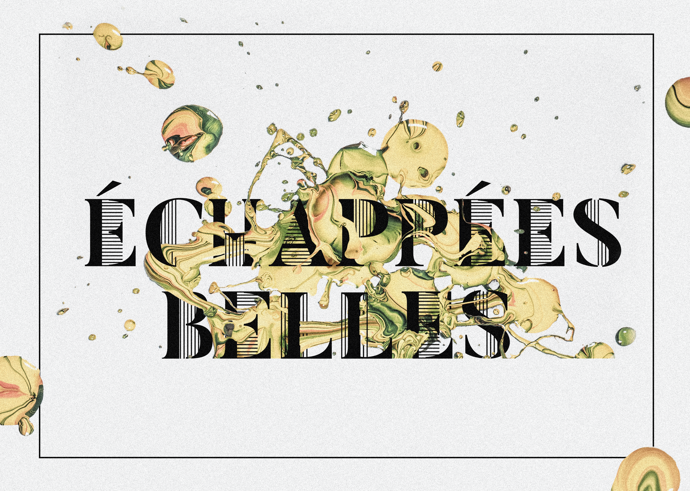
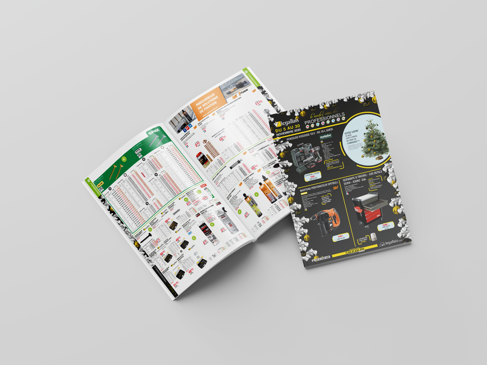

Portfolio graphique
Silvino Tony
Graphisme, communication visuelle et création numérique. Découvrez une sélection de mes projets et de mes réalisations.
Voir mon CVMes réalisations

Identité visuelle
Affiches Graphique
Création d'identités visuelles et développement d'univers graphique à travers des affiches de festivals ou autre.

Identité visuelle
Colhybrid
Création d'une identité visuelle pour un concept fictif, de la conception du logo à l'univers graphique et aux supports de communication.

Identité visuelle
Échappées Belles
Création d'une identité visuelle et développement d'un univers graphique cohérent complète autour d'un évènement.

Mise en Page éditoriale
Legallais - Catalogue
Création d'un catalogue fictif de produits dans le but de travailler la mise en page.

Identité visuelle - Mise en page
Tennis Magazine
Création d'une identité visuelle et mise en page d'un magazine.

Identité visuelle
Carton d'invitation
Création d'une identité visuelle et développement d'un univers graphique cohérent par rapport aux travaux d'une artiste, Niki de Saint Phalle.